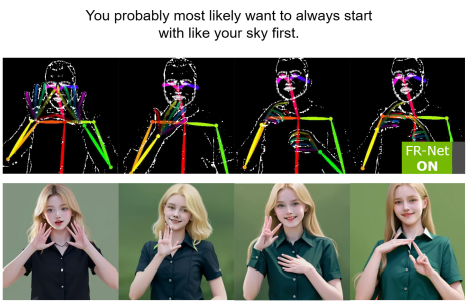

Sen Fang
|
|
|
I'm Sen Fang, a bachelor of CS with double degree, I will be a Ph.D. student at Rutgers University, supervised by Prof. Dimitris Metaxas.
My main research field is Multimodal. My research interest covers Audio-Visual (talking-face and representation of text/audio, Audio Generated Image), AIGC (AI-generated content, Multi-view learning, NeRF/3D), Self-Supervised Learning (Pose recognition and modeling, object & action detection/recognition in videos, Medical Image Analysis) and VR/AR/DCG and Visual Perception (Enables the agent to make plan and navigate)!
Recently I have been interested in the following topic:
- LLM/HCI/Embodied Intelligence - I will bring agents that can interact with scenes or people to reality, whatever it takes.
- Identify and Model Behavior - particularly in perceiving and synthesizing dynamic humans, objects, and scenes. I think controlling robots by self-supervised training through real-world data and Computer Vision related technologies is the right path.
- Sign Language - it's a worthwhile direction for AP to add to your almost any lab. I can introduce you to this field. (It has high entry threshold, small competition, annual tech hot-spots/Your past technology can be continuously applied, and it is easy to get funding or medical funding.), which is a robotics topic based on Computer Vision.
I am open to academic collaborations, and please drop me an email if you are interested in collaborating with me.
Recent News
- 2024.6 I got the Best Bachelor's Thesis award of Henan University.
- 2024.5 I made a brief contact, just hopefully work as an Intern in Microsoft in 25 Summer.
- 2024.2 I have received the offer of dream advisor and will start my doctoral career.
Selected Papers
* Equivalent contribution, † Corresponding author
 |
SignLLM: Sign Languages Production Large Language Models
|
 |
Bridging the Gap between Text, Audio, Image, and Any Sequence: A Novel Approach using Gloss-based Annotation
|
|  | SignDiff: Learning Diffusion Models for American Sign Language Production
|
→ Full list of Publication
Part of Friends (random sort)
Expend
Georgia Institute of Technology: Hongbin Zhong
Columbia University: Chunyu Sui
Tsinghua University: Jiayin Zhu
Nanyang Technological University: Yalin Feng
University of Washington: Yangyang Wu